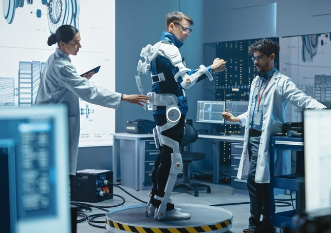

Bionic prothesis - Myth or reality?
We, BIONIC PROTOSAURUS, are a company targeting the use of bionic equipment in order to enhance people's lives, in an era increasingly dependant on technology that dramatically affects our way of going about things.
Bionics is not a specialized science but an interscience discipline; it may be compared with cybernetics. It uses models of living systems in order to find new ideas for useful artificial machines and systems. All of this effort is intended to make your lives easier. Find out more!
